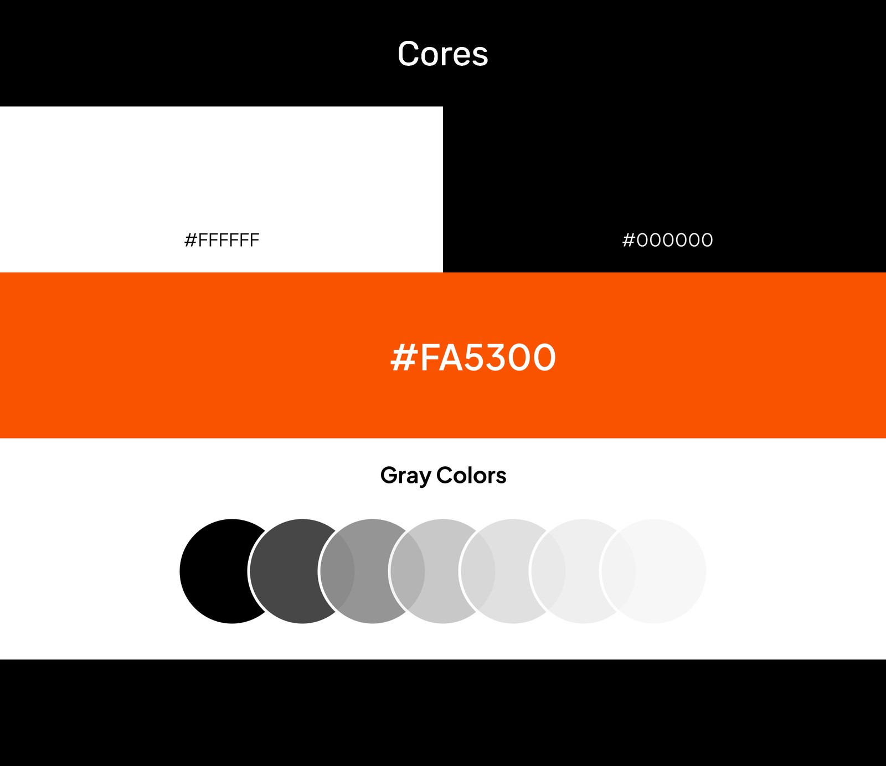
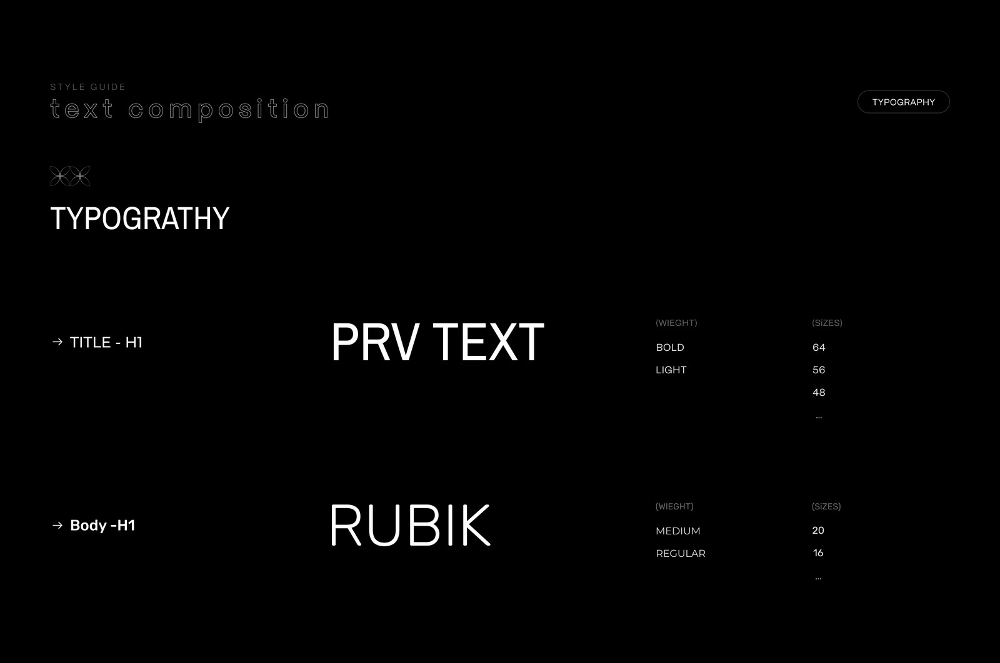
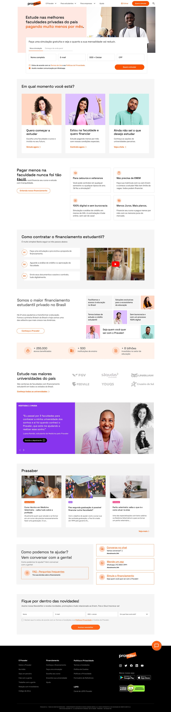

Discovery & Entrevistas
Investiguei com usuários o que não estava claro no site e por que os públicos se perdiam.
Redesign do site comercial do Pravaler para deixar claro, logo de cara, o que é o financiamento estudantil, para quem ele serve e como entrar no portal — recuperando a identidade da marca que estava diluída.
O Pravaler é uma fintech de financiamento estudantil, mas o site comercial não deixava isso claro. Havia excesso de cores e a identidade da marca se perdia. Nas entrevistas, os usuários diziam não entender ao certo o que o Pravaler fazia: públicos diferentes chegavam ao site sem saber como entrar no portal, como funcionava o financiamento ou o papel do garantidor. O redesign foi a chance de rever tudo isso.
Entrei como Designer de Produto Especialista, dentro da squad de descoberta. A frente começou reunindo o chapter de design inteiro — dez designers — e terminou comigo tocando sozinho, alinhando o desenvolvimento com a squad e trabalhando lado a lado com marketing (copy e SEO) e negócios. Meu papel ia da investigação do problema à interface final.
Em paralelo a esse projeto, eu tocava o design system do Pravaler. Apliquei aqui os componentes que a gente vinha construindo — a nova paleta da marca, a tipografia, os raios de borda, os espaçamentos e os botões — para dar consistência ao site novo e recuperar a identidade visual que antes se perdia no excesso de cores.


Investiguei com usuários o que não estava claro no site e por que os públicos se perdiam.
Reorganizei as seções por público e tornei óbvio o caminho para entender o produto e entrar no portal.
Conduzi a frente junto à squad de descoberta, marketing (copy/SEO) e negócios.
Desenhei o site novo recuperando a identidade da marca e reduzindo o ruído visual.
Apliquei e evoluí os componentes da marca — cores, tipografia, botões, espaçamentos.
Validei a nova proposta com usuários para confirmar clareza e percepção.
O site passou a explicar, de forma direta, o que é o financiamento estudantil e o que o Pravaler faz.
Cada tipo de pessoa passou a entender para onde ir e como entrar no portal.
Novos testes de usabilidade mostraram aumento na percepção do serviço e das seções certas para cada público.
